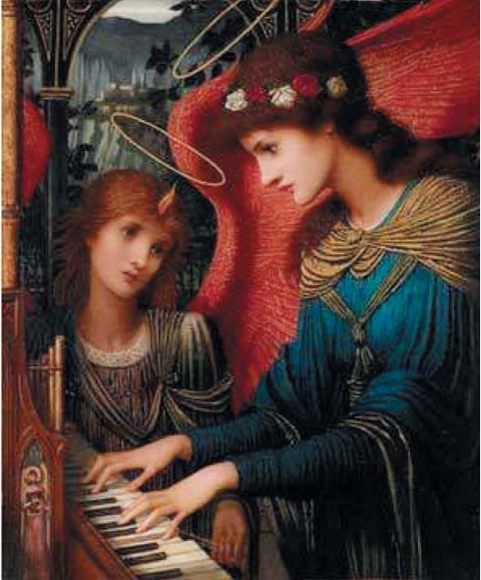
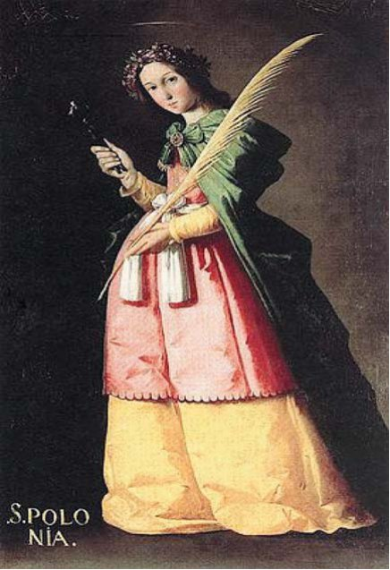
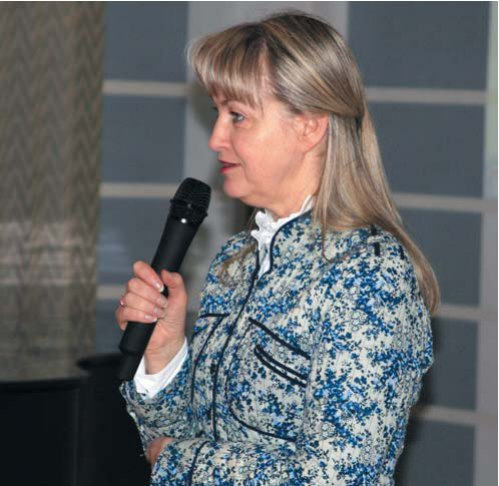
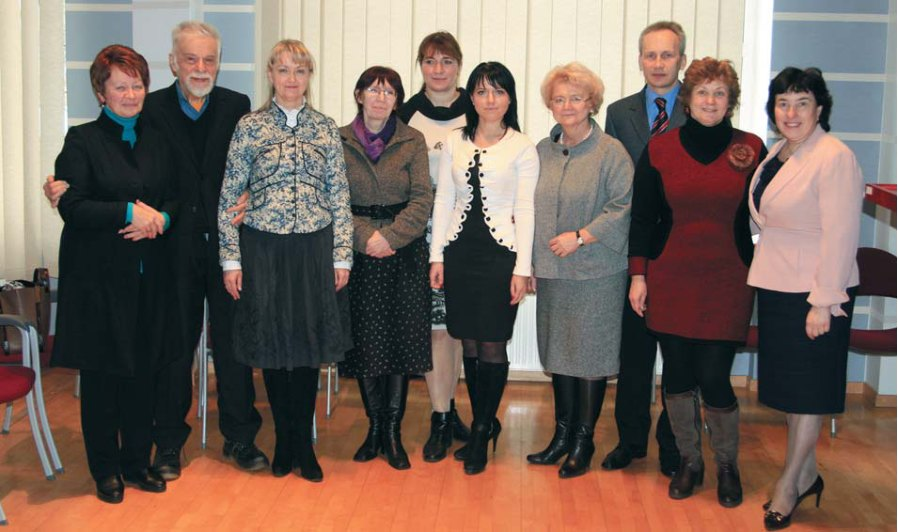

День стоматолога · журнал «ДентАрт» 2013 №2 (71)
Під покровом Святої Аполлонії і Святої Цецилії — про «ефект Моцарта» і музикотерапію
Якщо людина не людинолюбна, що вона зрозуміє в музиці?
Конфуцій
У латвійських стоматологів склалася добра традиція у День Святої Аполлонії на святковому засіданні обговорювати не вузькоспеціальні теми, а переважно питання духовного здоров'я, котре, безумовно, впливає на фізичне. Не стало винятком і святкове засідання Асоціації зубних лікарів Латвії, яке відбулося 9 лютого 2013 року в Ризі. У його учасників була можливість познайомитися з директором програми Латвійського радіо «Класика» Гундою Вайводе.
Пані Вайводе зазначила, що у музики і музикантів є своя покровителька — Св. Цецилія (Чечилія, а в деяких православних джерелах Кикилія), її вшановують 22 листопада, і цей день став Днем музики і музикантів.
Святу Аполлонію зображують зі щипцями і зубом, а мученицю Цецилію — з мечем, трояндою і зі скрипкою або біля органу, клавесину, фісгармонії, челести. У 1739 році Георг Фрідріх Гендель написав «Оду на день Св. Цецилії».
Гунда Вайводе звернула увагу стоматологів на те, що музика невідступно супроводжувала людей упродовж усієї історії людства. Це підтверджують дослідження археологів, істориків. Свій вплив музика чинила в різних сферах діяльності людини. Казки і легенди різних народів зберігають відгомони древніх знань про роботу зі звуком.


Від часу свого винайдення радіо стало місцем, де з'являлася і переходила в розряд культурних цінностей новітня музична інформація. Тут концентрувалося мистецтво, створювали свої записи відомі виконавці і композитори.
Музика оточує нас постійно. Передусім це музика нашої мови. Розуміння людини можна поглибити, сприйнявши його як музичну, звукову мелодійну систему.
Гунда Вайводе надала можливість прослухати своє інтерв'ю з Марісом Янсоном, одним з провідних диригентів сучасності, і ми почули П'яту симфонію великого австрійського композитора Густава Малера. І сталося те, що можна окреслити словами Людвіга ван Бетховена: «Музика — посередниця між життям розуму і життям почуттів». Бажання розуму — заробляння грошей, кар'єра і побутові клопоти, які падають на нас лавиною, відійшли вбік разом з конфліктами, недомовленостями, компромісами. Душа стрепенулася, немов омита джерельною водою...
Гунда Вайводе розповіла про деякі дослідження, присвячені впливу музики на людину. Виявляється, слухання музики Моцарта посилює нашу мозкову активність. Послухавши Моцарта, люди, що відповідають на стандартний IQ-тест, демонструють певне підвищення інтелекту. Це виявлене ученими явище дістало назву «ефект Моцарта».
У 1988 р. було зроблено важливе наукове відкриття в галузі механіки, що ґрунтується на явищі резонансу. У природі тіла, що обертаються, синхронізуються — між швидкостями таких тіл встановлюються певні фазові співвідношення. Явище резонансу лежить і в основі гармонійного поєднання звуків у музичних творах. Резонансу підпорядковані різноманітні біоритми людського організму. Останніми роками з'явилася гіпотеза, що пояснює існування гармонійних пропорцій, зокрема золотої пропорції, явищем резонансу. Згідно з цією гіпотезою, резонанс, немов невидимий диригент, непомітно і наполегливо налаштовує системи, об'єднує їх у гармонійне ціле, створюючи мелодію, що впливає на наші серця.
Вважається, що скрипка лікує душу, допомагає вийти на шлях самопізнання, збуджує в душі співчуття, готовність до самопожертви. Орган упорядковує розум, гармонізує енергопотік хребта, його називають провідником енергії «Космос — Земля — Космос». Піаніно очищає щитоподібну залозу. Барабан відновлює ритм серця, упорядковує кровоносну систему. Флейта очищає і розширює легені. Арфа гармонізує роботу серця. Віолончель благотворно діє на нирки. Цимбали «урівноважують» печінку. Баян і акордеон активізують роботу черевної порожнини, а саксофон, «найсексуальніший» інструмент, — сексуальну енергію.

Порада Миколи Костянтиновича Реріха відкриває нам метод самовдосконалення: «Ви, звичайно, любите музику. Не лише продовжуйте любити її, але постійно робіть це розуміння витонченішим, наближайтеся до неї, особисто пізнавайте її більше; вона відкриє творчість вашу, наситить серце ваше і зробить доступним те, що без гармонії і звуку, можливо, назавжди залишилося б уві сні. Дивіться на музику як на розкриття серця вашого» (Н. Спіріна, «Реріх про музику і музикантів», журнал «Музыкальная жизнь», 1976, № 23).
Говорячи про сакральні аспекти музичного мистецтва, дотичні до досягнень сучасної науки, піонер упровадження музикотерапії в Україні, доктор мистецтвознавства Г. І. Побережна, автор популярної книги для батьків «Музика в дитячій душі», доходить головного висновку: у кожної людини є «своя музика», що відповідає вектору особистої долі. Цей вектор і цю музику можна витягнути з гороскопу людини як оригінальну «астромузику». Саме ця музика здатна прискорити особисту еволюцію людини, а це у результаті означає — зробити її здоровою і щасливою.
...Ідея в День св. Аполонії познайомити стоматологів з директором програми Латвійського радіо «Класика» Гундою Вайводе належить емеритованому державному вченому Янісу Ласовському, членові редакційної ради журналу «ДентАрт». Її підтримали президент Асоціації зубних лікарів Латвії Андріс Бігестанс, професор Анда Бринкмане, професор Эгіта Сенакола, декан Інгріда Чема та інші.
«Музика, немов дощ, крапля за краплею просочується в серце і оживляє його» (Ромен Роллан).
